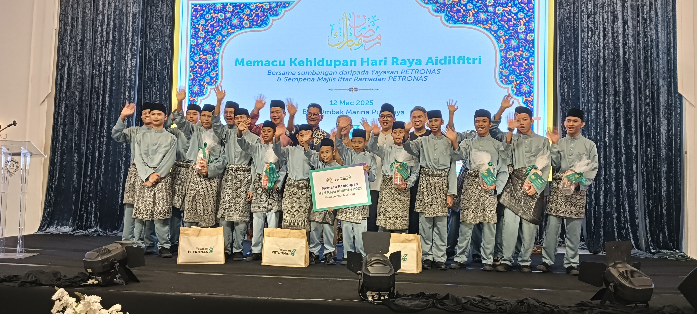

Our Story
Yayasan Anak-Anak Yatim Wardatul Jannah was founded on 19 June 2009 and officially registered on 20 January 2010 under the Trustee Incorporation Act 1952. This welfare home aims to protect, educate, and guide orphans, the poor, converts, and the underprivileged to grow into responsible, independent individuals.
Read MoreRecent Activities
5 May 2025
Motivational Talk
Our children attended a motivational session on positive thinking and achieving their dreams.
See More21 April 2025
Religious Program
A weekend of spiritual activities to strengthen faith and foster unity among the children.
See More12 March 2025
Charity Visit
Generous visitors came to share donations and spend quality time with the children.
See MoreYour Support Makes a Difference
Every donation helps us provide food, shelter, education, and care for our children in need.